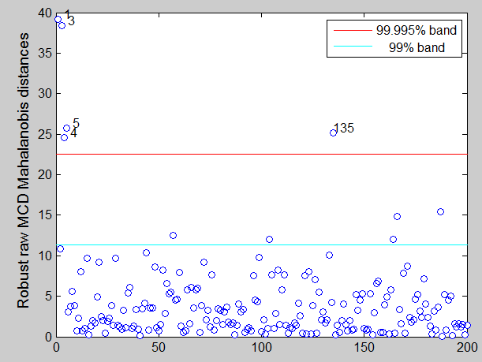
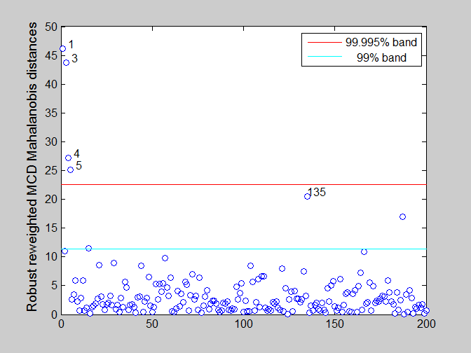
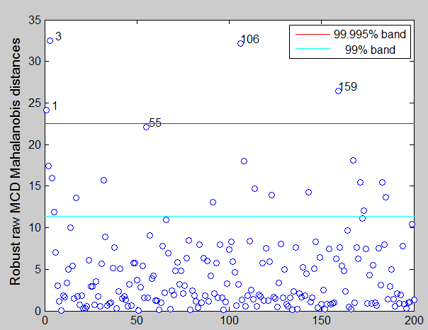
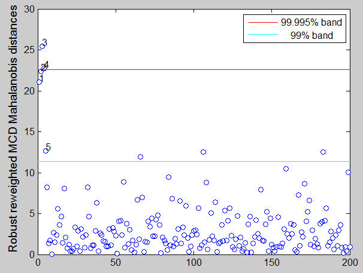

| Flexible Statistics Data Analysis Toolbox™ |
|
Minimum covariance determinant
[RAW,REW] = mcd(Y)
[RAW,REW] = mcd(Y,param1,val1,param2,val2,...)
[RAW,REW,varargout] = mcd(Y,...);
[RAW,REW] = mcd(Y) computes raw and reweighted minimum covariance determinant. mcd is a highly robust estimator of multivariate location and scatter. The code below exploits the computationally efficient algorithm of Rousseeuw and Van Driessen (1999). Consistency of the raw MCD estimator of location and scatter at elliptical models, as well as asymptotic normality of the MCD location estimator has been proved in Butler, Davies PL and Jhun (1993).
Y is the n-by-v matrix which contains (in the columns) the values of v variables. Y is optionally returned by the function as part of the output structures RAW and/or REW if options ysaveRAW and ysaveREW are set to 1.
If an optional output variable is specified for varargout, the matrix of the indices of the samples extracted for computing the estimator is returned in that variable.
[RAW,REW] = mcd(Y) returns the following information
h − scalar scalar. The number of observations that have determined the MCD estimator
loc − 1-by-v vector vector containing mcd estimate of location. loc is the mean of the observations for which the determinant of the sample covariance matrix is minimal.
cov − v by v matrix containing robust estimate of the covariance matrix. cov is the estimate of scatter of the h observations for which the determinant of the sample covariance matrix is minimal multiplied by a consistency factor and a small sample correction factor. The consistency factor comes from Tallis and is based on the chi2 distribution, and on the ratio h/n. The small sample correction factor is due to Pison et al. to make the estimator unbiased.
cor − v by v matrix containing robust estimate of the correlation matrix.
bs − v+1-by-1 vector containing the units forming subset associated with best estimate (minimum covariance determinant)
md − n x 1 vector containing the estimates of the robust Mahalanobis distances (in squared units).
weights − n-by-1 vector containing weights for each observations. The elements of this vector are 0 or 1. Elements equal to 0 are associated with the outliers.
outliers − this output is present only if conflev has been specified. It is a vector containing the list of the units declared as outliers using confidence level specified in input scalar conflev
conflev − confidence level which is used to declare outliers. Remark: scalar out.conflev will be used to draw the horizontal lines (confidence bands) in the plots
singsub − Number of subsets without full rank. Notice that if this number is greater than 0.1*(number of subsamples) a warning is produced on the screen
plane − In case of an exact fit, RAW.plane contains the coefficients of a (hyper)plane a_1(x_i1-m_1)+...+a_p(x_ip-m_p)=0 containing at least h observations, where (m_1,...,m_p) is the MCD location of these observations.
Y − Data matrix Y. The field is present if option ysaveRAW is set to 1.
class − string containing 'mcd'
loc − 1-by-v vector vector containing mcd reweighted estimate of location. loc is the mean of the observations which have not been declared as outliers (i.e. the observations for which RAW.weights=1).
cov − v x v matrix containing robust reweighted estimate of the covariance matrix. cov is the estimate of scatter of the observations for which RAW.weights=1 multiplied by a consistency factor and a small sample correction factor. The consistency factor comes from Tallis and is based on the chi2 distribution and on the ratio sum(RAW.weights)/n. The small sample correction factor is due to Pison et al. to make the estimator unbiased.
cor − v by v matrix containing robust reweighted estimate of the correlation matrix.
md − n x 1 vector containing the estimates of the robust Mahalanobis distances (in squared units) from reweighted centroid and covariance matrix.
outliers − this output is present only if conflev has been specified. It is a vector containing the list of the units declared as outliers using confidence level specified in input scalar conflev
Y − Data matrix Y. The field is present if option ysaveREW is set to 1.
class − string containing 'mcdr'
[RAW,REW] = mcd(Y,param1,val1,param2,val2,...) specifies one or more of the name/value pairs described in the following table.
| Parameter | Value |
|---|---|
| 'bdp' |
Measures the fraction of outliers the algorithm should resist. Any value between 0 and 0.5. The default value of bdp is 0.5 |
| 'nsamp' |
Number of subsamples which will be extracted to find the robust estimator. If nsamp=0 all subsets will be extracted. They will be (n choose p). Remark: if the number of all possible subset is smaller than 1000 the default is to extract all subsets otherwise just 1000. |
| 'refsteps' | scalar defining number of refining iterations in each subsample (default = 3). |
| 'reftol' |
scalar. Default value of tolerance for the refining steps The default value is 1e-6; |
| 'refstepsbestr' | scalar defining number of refining iterations for each best subset (default = 50). |
| 'reftolbestr' |
scalar. Default value of tolerance for the refining steps for each of the best subsets The default value is 1e-8; |
| 'bestr' | scalar defining number of "best betas" to remember from the subsamples. These will be later iterated until convergence (default=5). |
| 'conflev' |
Scalar between 0 and 1 containing confidence level which is used to declare units as outliers. Usually 0.95, 0.975, 0.99 (individual alpha) or 1-0.05/n, 1-0.025/n, 1-0.01/n (simultaneous alpha). Default value is 0.975 |
| 'nocheck' |
Scalar. If nocheck=1 no check is performed on matrix Y. As default nocheck=0. The controls on h, bdp and nsamp still remain. |
| 'plots' |
Scalar or structure. If plots is a structure or scalar equal to 1, generates
|
| 'msg' |
Scalar which controls whether to display or not messages on the screen If msg=1 (default) messages are displayed on the screen about estimated time to compute the estimator else no message is displayed on the screen. |
| 'ysaveRAW' |
scalar that is set to 1 to request that the data matrix Y is saved into the output structure RAW. This feature is meant at simplifying the use of function malindeplot. Default is 0, i.e. no saving is done. |
| 'ysaveREW' |
scalar that is set to 1 to request that the data matrix Y is saved into the output structure REW. This feature is meant at simplifying the use of function malindeplot. Default is 0, i.e. no saving is done. |
In these examples we use the same data which have been used in the help of function FSM in order to compare the output of different procedures.
state=100;
randn('state', state);
n=200;
v=3;
Y=randn(n,v);
Ycont=Y;
Ycont(1:5,:)=Ycont(1:5,:)+3;
[RAW,REW]=mcd(Ycont,'conflev',0.99,'ysaveRAW',1);
For outlier detection we consider both the nominal individual 1% significance level and the simultaneous Bonferroni confidence level.
% Define nominal confidence level conflev=[0.99,1-0.01/n]; % Define the main title of the plots titl=''; % Robust Mahalanobis distances from raw MCD laby='Robust raw MCD Mahalanobis distances'; malindexplot(RAW.md,v,'conflev',conflev,'laby',laby,'title',titl)

In this example mcd estimator (using 1% Bonferroni threshold) seems to detect 4 genuine outliers and one good unit. The output is the same as that of FSM.
Using reweighted MCD we obtain
% Robust Mahalanobis distances from reweighted MCD laby='Robust reweighted MCD Mahalanobis distances'; malindexplot(REW.md,v,'conflev',conflev,'laby',laby,'title',titl)

If in the previous code we change the seed to 543 (state=543) we obtain the following results:
Robust distances from using raw MCD.

Robust distances from using reweighted MCD.

You can compare the output with that which comes out from procedure FSM.|
|
malindexplot.html | mdrplot.html |
|